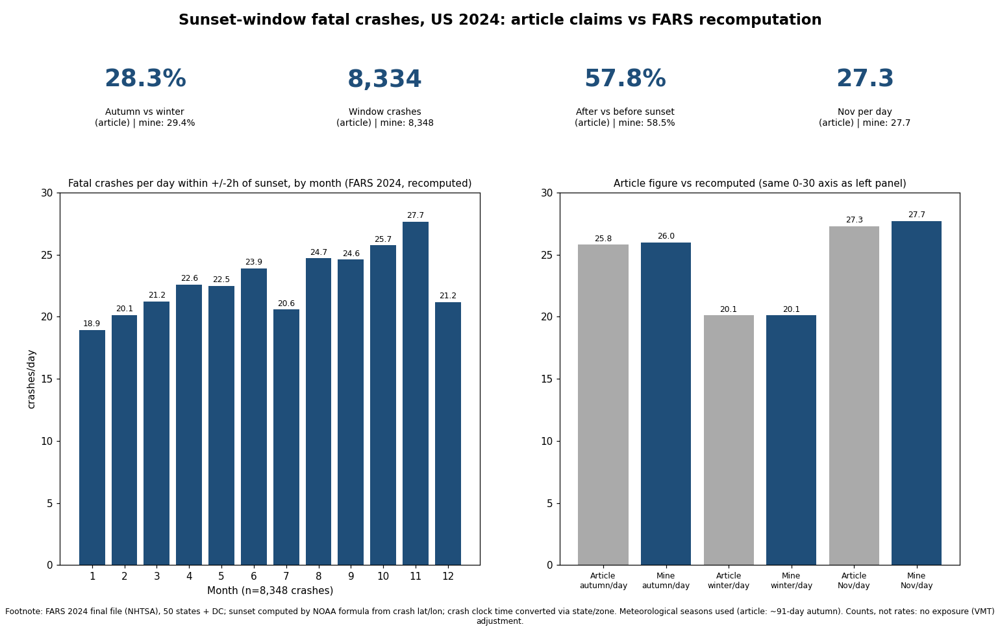

I rebuilt the analysis from NHTSA's final 2024 FARS file (36,297 fatal crashes). Within two hours either side of computed sunset I get 8,348 crashes and 8,934 deaths (article: 8,334 and 8,921). Autumn runs 26.0 per day against winter 20.1, a 29.4% gap (article 28.3%). November is 27.7 per day against January 18.9 (article 27.3 and 19.0). After-sunset crashes are 58.5% above pre-sunset ones (article 57.8%). January after-sunset share is 72.4% (article 72.2%). Every checked figure is within about 1-2%, explained by my own sunset and timezone approximations and my meteorological (not astronomical) seasons.
| Claim | Article | Recomputed (FARS 2024) | Verdict |
|---|---|---|---|
| Window crashes / deaths, nation | 8,334 / 8,921 | 8,348 / 8,934 | Confirmed |
| Autumn vs winter per day | 25.8 vs 20.1 (+28.3%) | 26.0 vs 20.1 (+29.4%) | Confirmed |
| Summer / spring per day | 23.0 / 22.1 | 23.1 / 22.1 | Confirmed |
| Deaths winter/spring/summer | 1,979 / 2,189 / 2,256 | 1,976 / 2,186 / 2,259 | Confirmed |
| Autumn crashes / deaths | 2,349 / 2,497 | 2,366 / 2,513 (Sep-Nov) | Confirmed (season definition differs) |
| Nov vs Jan per day | 27.3 vs 19.0 (+43.4%) | 27.7 vs 18.9 | Confirmed; 27.3/19.0 gives 43.7% (rounding) |
| Nov after / before sunset | 543 / 276 (+96.7%) | 554 / 276 | Confirmed |
| Jan after-sunset share | 72.2% | 72.4% | Confirmed |
| Post vs pre sunset nationally | +57.8% | +58.5% | Confirmed |
| Sunsets: Phoenix Jan 1 / Jul 1 | 5:31 pm / 7:42 pm | 5:30 pm / 7:41 pm | Confirmed |
| Sunsets: Las Vegas Jan / Jul | 4:37 pm / 8:02 pm | 4:35 pm / 8:01 pm | Confirmed |
| Pedestrian deaths concentrated after sunset | qualitative | not tested | Not checked here |
Method: 50 states + DC (territories excluded), crashes with valid time and coordinates (35,894 of 36,297); sunset from the NOAA solar formula at the crash location; clock time converted using state time zones (split states by longitude); window = sunset +/-120 min. Confidence: high on the match, medium on exact decimals.
Answer: accurate but exposure-free. Confidence: high. Judging risk would need traffic volume by hour; a seasonal comparison says nothing causal.
https://static.nhtsa.gov/nhtsa/downloads/FARS/2024/National/FARS2024NationalCSV.ziphttps://travelandtourworld.com/news/article/oxeev4irmuri